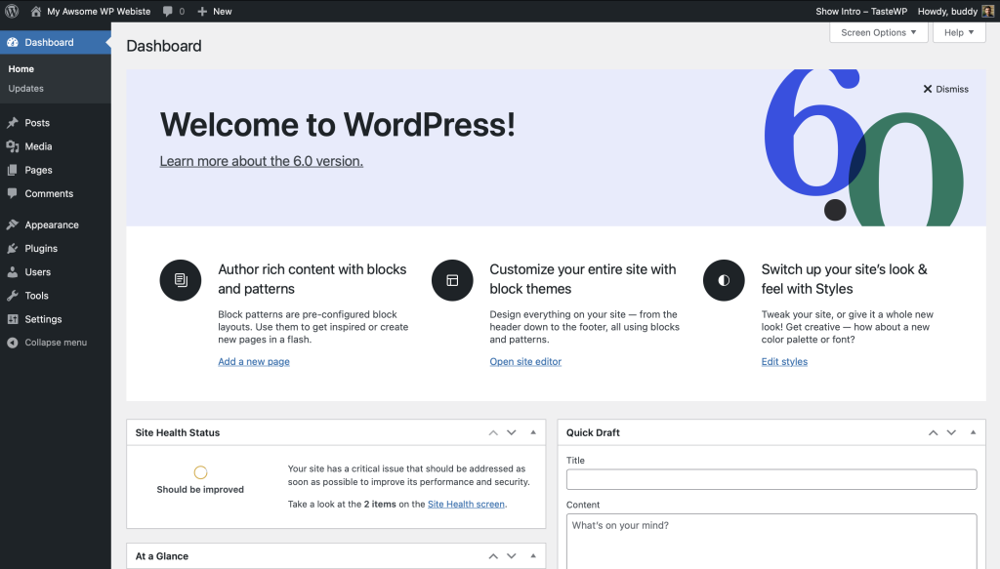
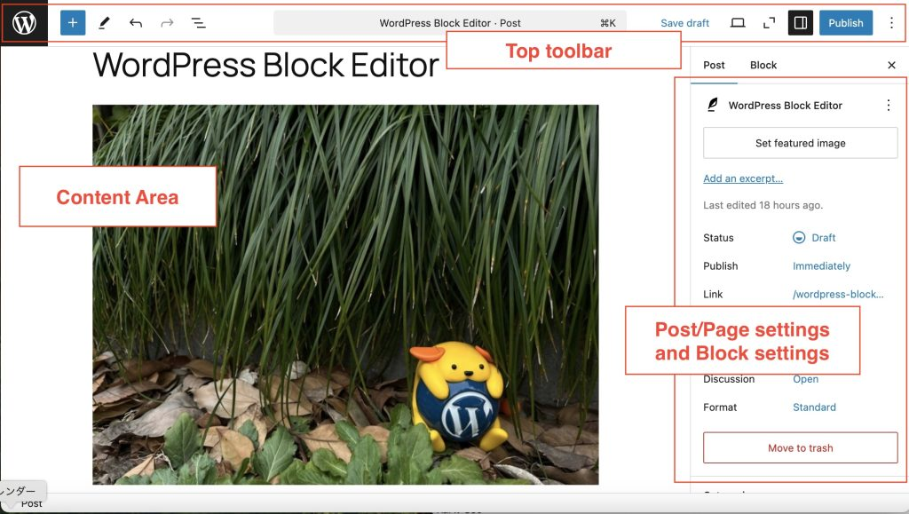
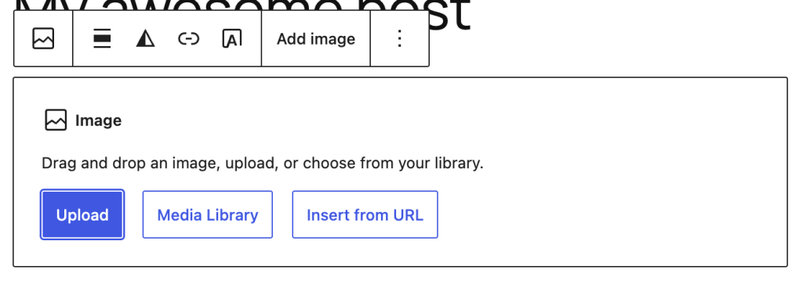

WordPress.org và WordPress.com
WordPress.org cung cấp phần mềm CMS mã nguồn mở để cài trên hosting do người dùng chọn. WordPress.com là dịch vụ lưu trữ do nhà cung cấp vận hành. Bảng 1.1 của bài thực hành so sánh WordPress.org + InfinityFree như một phương án tự lưu trữ.
Ví dụ quy trình quản trị bằng WordPress
Các ảnh dưới đây lấy từ tài liệu WordPress.org để minh họa màn hình quản trị và trình soạn thảo. Giao diện thực tế có thể khác theo phiên bản và giao diện website.
Bước 1. Mở bảng điều khiển
Sau khi đăng nhập, bảng điều khiển cho lối tắt tới bài viết, trang, thư viện ảnh và cài đặt. Đây là nơi bắt đầu quản lý nội dung.

Bước 2. Tạo và soạn bài viết
Chọn Posts → Add New để tạo bài. Trình soạn thảo khối chia vùng nội dung, thanh công cụ và cài đặt bài viết; nhập tiêu đề rồi thêm các khối văn bản theo thứ tự.

Bước 3. Thêm ảnh, văn bản thay thế và chú thích
Thêm khối Image rồi tải ảnh lên hoặc chọn trong Media Library. Điền văn bản thay thế mô tả nội dung ảnh, thêm chú thích và kiểm tra bản xem trước trước khi xuất bản.

Điểm cần cân nhắc
- Điểm mạnh: dễ quản lý nội dung, nhiều giao diện và công cụ SEO.
- Điểm cần tính đến: cần cơ sở dữ liệu, hosting tương thích, cập nhật và sao lưu.
- Trong bài thực hành này: WordPress là phương án được so sánh; prototype hiện tại chưa được cài hoặc đồng bộ bằng WordPress.

Đối chiếu với website đang làm
Chủ đề website vẫn là cà phê Việt. Báo cáo chọn Publii và GitHub Pages cho prototype tĩnh vì nội dung hiện tại không cần cơ sở dữ liệu hay chức năng phía máy chủ. Website đã xuất bản tại lethanhtu196tt-svg.github.io; kết quả kiểm tra URL, HTTPS, sitemap và tốc độ mẫu được ghi trong Bảng 1.2.